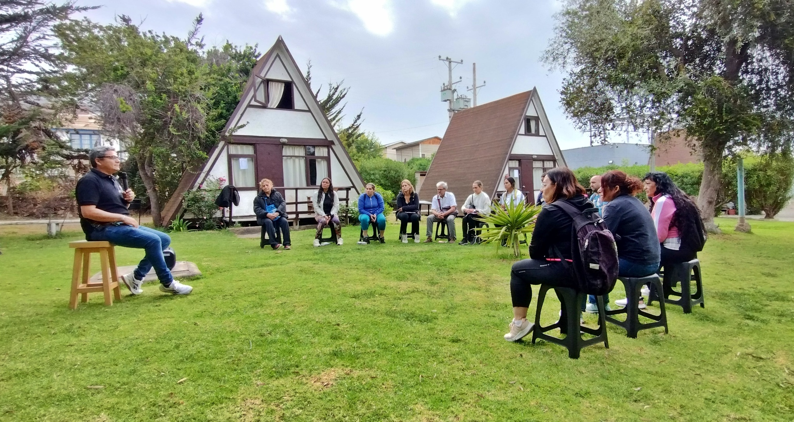

Somos una escuela de liderazgo con más de una década de experiencia en la formación de líderes de calidad humana; y cientos de seminarios dictados, abierta a quien quiera auto descubrirse y desee el éxito en su vida; gestionado tanto en su rol personal como profesional, sin distinciones políticas o religiosas de ningún tipo.
Nos ocupa el crecimiento y mejora continua tanto personal, como profesional y espiritual de nuestros participantes en consonancia con su propio y particular propósito de vida; que constituye el descubrimiento más importante en nuestro espacio de trabajo.
Desde nuestra institución, promovemos y potenciamos el amor propio, la autoestima y el liderazgo, entendiéndolo fundamental para la realización y éxito de proyectos, objetivos y metas; como así también, de las relaciones humanas desde cada uno de los roles que desempeñan nuestros integrantes en las distintas áreas de su vida.
Sebastián Ruiz es el Director y Facilitador de “GRUPO PRIMEROS PASOS”, lo fundó en el año 2012 y se desempeña en el aprendizaje y educación transformacional, con la firme convicción de formar líderes de calidad humana, siendo la integración holística de los participantes su principal misión, y el servicio al prójimo el punto de encuentro de todos sus miembros, basado en el método educativo desarrollado por la Universidad de Santa Mónica y reproducido en América y el resto del mundo por las más prestigiosas organizaciones educativas.
Desde el 2004 cuando el coaching estaba recién empezando en Argentina, Sebastián tomó su primer seminario de desarrollo personal y profesional, para ya no dejar de trabajar en la materia.
Durante más de 8 años se entrenó profesionalmente para brindar poderosas herramientas de coaching y crear situaciones vivenciales de expansión, abordando la tarea de facilitar con visión y propósito, convirtiéndose en un profesional que vive como se enseña y es congruente con la información entregada en cada seminario.